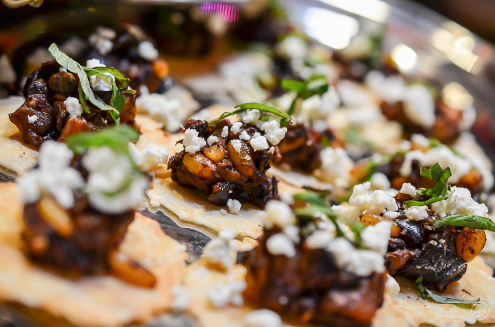
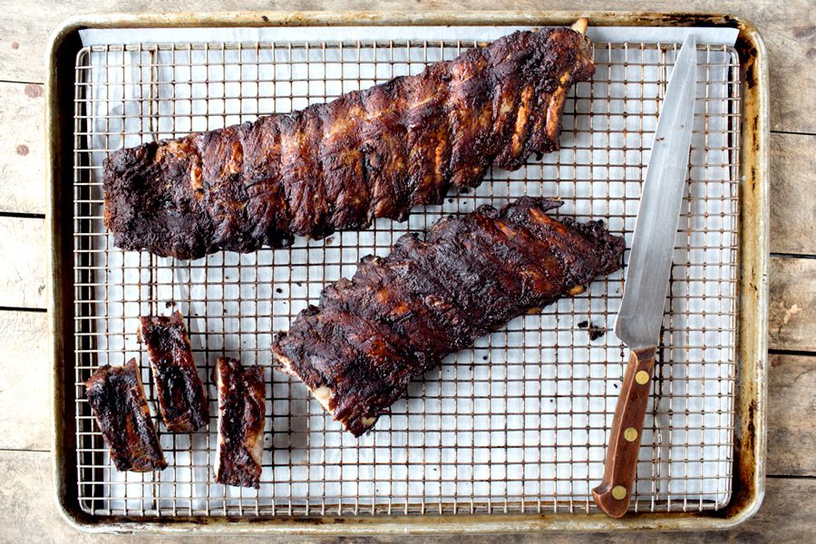

REDISCOVER CACAO WITH OUR FEATURED DISHES
CHICKEN MOLE
Layers of complex and bold flavors simmer together to make this delicious Chicken Mole with Homemade Mole Sauce. Served over rice, wrapped in warm tortillas, or piled on a bed of fresh greens, the Homemade Chicken Mole dinner options are endless.

DARK CHOCOLATE EGGPLANT CAPONATA & GOAT CHEESE BRUSCHETTA
A combination of caponata’s traditional acidic flavors with the depth of dark chocolate. The results are a fun blend of savory and sweet, and perfect for serving at a happy hour or cocktail party.
COCOA-RUBBED BABY BACK RIBS
It's a lucky rack of ribs that meets this rub: warm spices like cinnamon, allspice, and ginger get a depth charge from cocoa powder and bit of heat from fiery mustard powder. Prepared a day ahead of time and then baked until meltingly tender, they're a perfect weeknight meal.
Reserve a Table